|
Story-Line02
Long Library
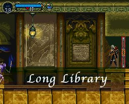
เดินขึ้นไปด้านบนขวา จะพบ Relic
: Faerie Scroll
ซึ่งทำให้สามารถเห็นชื่อของศัตรูได้
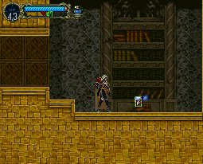
จากนั้นไปด้านซ้ายสุดของห้องสมุด จะเจอร้านค้า
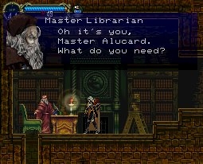
ให้ซื้อ Jewel of Open - 500 g (Relic
: Jewel of Open เป็น Relic อันหนึ่งด้วย)
ทำให้สามารถเปิดประตูสีฟ้าได้ (Magically Sealed)

และให้ซื้อสิ่งจำเป็นอื่นๆ เช่น
Castle Map - 103 g (ทำให้เห็นแผนที่)
Library Card - 500 g (ใช้กลับมายังร้านค้าอีกครั้ง)
กลับไปเข้าห้องวาร์ปรูป "ปู" กลับไปยังโซน Entrance
ไปยังโซน Alchemy Laboratory
ด้านซ้ายมือจะมีประตูที่มีเวทย์มนต์ปิดผนึกอยู่
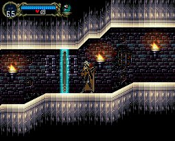
แต่เมื่อมี Jewel of Open จะสามารถผ่านเข้าไปได้
เข้าไปจะเจอ Maria อีกครั้ง
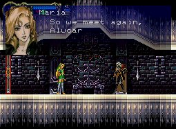
เธอบอกว่า เมื่อก่อนเธอเคยเข้ามาในปราสาทนี้
แต่ตอนนี้มันไม่เหมือนเดิม
เมื่อออกไปจะเจอโซนใหม่
Royal Chapel
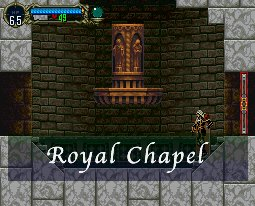
จะมีบันไดให้เดินขึ้นไปด้านขวาบน
บนสุดจะเจอ Bone Pillar ที่มี
Spiked Ball อยู่ด้านบน
ซึ่งตรงนี้หากเก็บ Level จาก Spiked Ball
จะได้ Exp มากถึงครั้งละ 300 กว่าๆ เลยทีเดียว
วิธีทำคือ ให้ใช้ Jewel Knuckles
และเข้าไปใกล้ๆ (ใกล้มากๆ) แล้วนั่งลง กดปุ่ม "โจมตี" ค้างเอาไว้
จะทำให้โจมตีได้รัวๆ
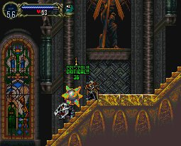
จากนั้นผ่านไปยังห้องทางด้านขวาจะเจอห้องสารภาพบาป (Confession Room)
สามารถนั่งบนเก้าอี้ได้ (กดปุ่ม "บน")
และจะมีวิญญาณ ออกมาพูดคุยด้วย
แต่บางตัวจะเป็นวิญญาณร้าย ให้ระวังด้วย
หากนั่งเก้าอี้ซ้ายมือ และเจอวิญญาณที่ใส่เสื้อคลุมสีน้ำเงิน
ให้นั่งฟังเขา เมื่อเขาจากไป จะได้รับ Grape
juice
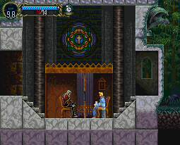
จากนั้นผ่านหอคอยไปทางขวามือเรื่อยๆ
จนไปถึงห้องหนึ่ง จะเจอ Boss
Boss : Hippogryph
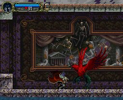
Level : 16
HP : 800
Exp : 800
วิธีปราบ
ให้รอจังหวะที่ Hippogryph ลงมาที่พื้น
ใช้ Jewel Knuckles โจมตี และกดปุ่ม
"โจมตี" ค้างไว้
จะเป็นการโจมตีรัวๆ
เมื่อปราบได้จะเจอ Maria อีกครั้ง
เธอจะให้ช่วยหา Richter Belmont ที่หายตัวไป
และเธอเชื่อว่า Richter อยู่ในปราสาทแห่งนี้
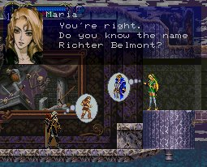
เดินต่อไปทางขวาจะเจอโซนใหม่
Castle Keep
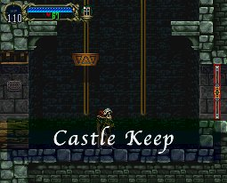
ด้านขวาสุดจะมีห้องวาร์ปรูป "สิงโต"
ขึ้นลิฟต์ไปด้านซ้ายจะได้ Relics
: Leap Stone
ทำให้สามารถกระโดดได้ 2 ครั้งอย่างต่อเนื่อง
ซึ่งกำแพงด้านบนสามารถทำลายได้
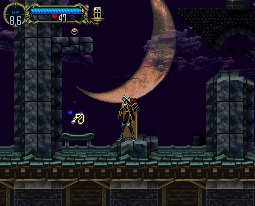
จากนั้นให้กลับไปยังนาฬิกายักษ์กลางปราสาทอีกครั้ง
ให้รอเวลาสักครู่ใหญ่ๆ
รูปปั้นด้านซ้ายบนจะเลื่อนออก สามารถปีนขึ้นไปได้
โดยใช้ความสามารถกระโดด 2 ครั้ง
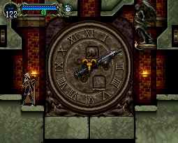
เมื่อเข้าไปจะเจอโซนใหม่
Olrox's Quarters

เมื่อเข้าไปจะเจอห้องที่มีดาบขนาดยักษ์ (Spectral Sword)
ห้องด้านขวาล่าง สามารถทำลายกำแพงเข้าไปได้ (WallSecret04)
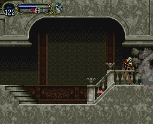
ห้องด้านขวาบน จะไปต่อยังห้องวาร์ปอีกห้อง (ห้องวาร์ปรูป "แพะ")
ส่วนด้านซ้ายล่าง จะมีเชิงเทียนที่มี Sub-weapon "Stopwatch"
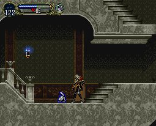
ให้เก็บแล้วนำกลับไปใช้ยังนาฬิกายักษ์กลางปราสาท
จะทำให้รูปปั้นด้านขวามือเลื่อนออกไป
สามารถปีนขึ้นไปได้
ภายในนั้นจะมี อุปกรณ์ที่มีชื่อ Alucart อยู่ด้วย
มีทั้ง ดาบ, โล่ห์ และเกราะ
ซึ่งเมื่อสวมใส่รวมกันแล้ว จะได้รับ Luck เพิ่มขึ้นอีก +30
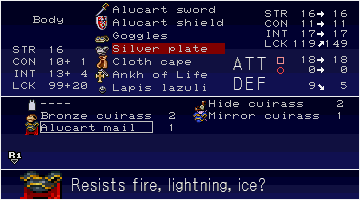
เมื่อเก็บของครบแล้ว กลับไปยังห้องที่มีดาบยักษ์เฝ้าอยู่
ด้านซ้ายมือจะมีทางไปต่อ และจะเจอโซนใหม่
Next
to Colosseum
|